KwaZulu-Natal

KwaZulu-Natal, a coastal South African province, is known for its beaches, mountains and savannah populated by big game. The safari destination Hluhluwe-iMfolozi Park, in the northeast, is home to black and white rhinos, lions and giraffes. Durban is an Indian-influenced harbor city and a popular surfing spot. Cultural villages around the town of Eshowe showcase the traditions of the indigenous Zulu people.
The Elephant Coast encompasses the enormous iSimangaliso Wetland Park, whose varied inland and coastal ecosystems shelter marine mammals, turtles, elephants and other wildlife. The park also has beaches at Kosi Bay and diving sites in Sodwana Bay. uKhahlamba-Drakensberg Park, in the Drakensberg Mountains, is a destination for hiking and climbing among rocky tabletop peaks and caves displaying Bushman rock art. To the north, the Battlefields Region contains memorials to skirmishes from the Anglo-Boer and Anglo-Zulu wars, such as Isandlwana, Spioenkop and Rorke’s Drift, with museums and reenactments for visitors.
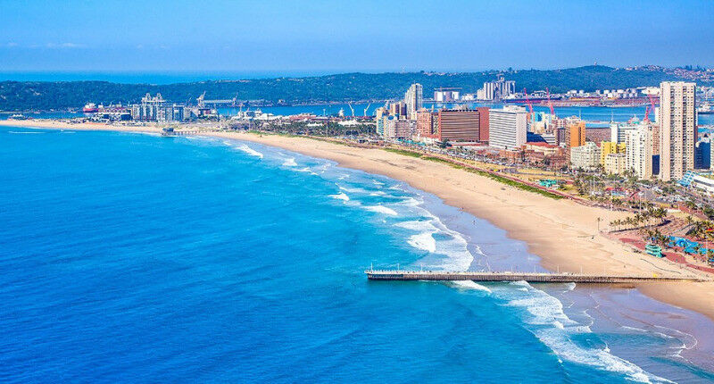
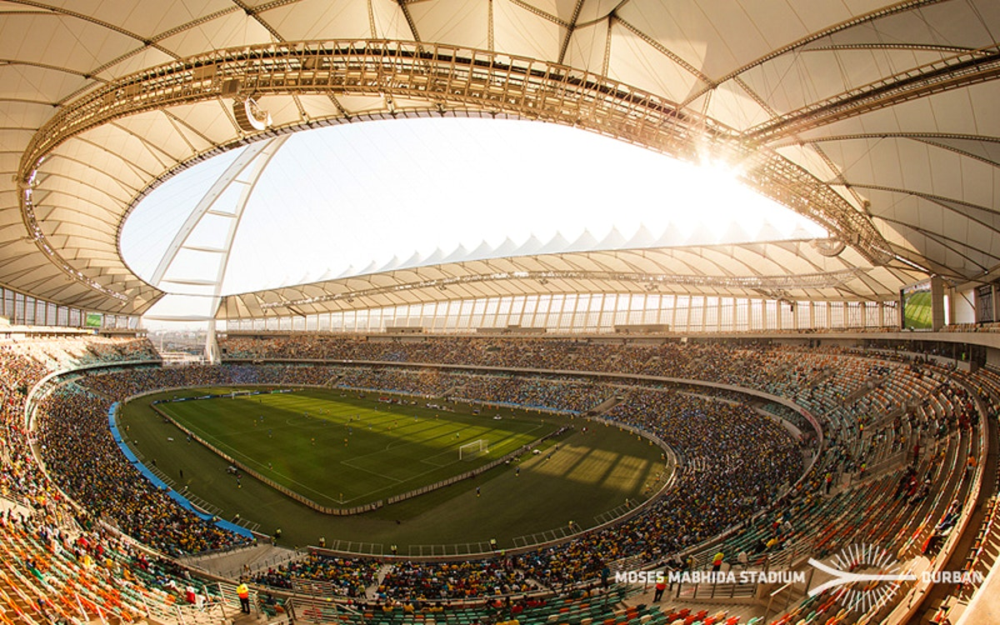
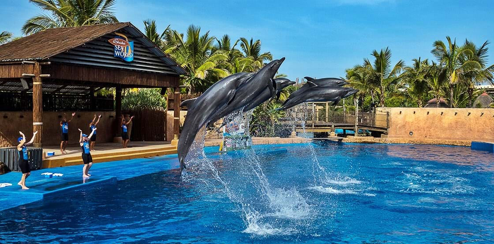
 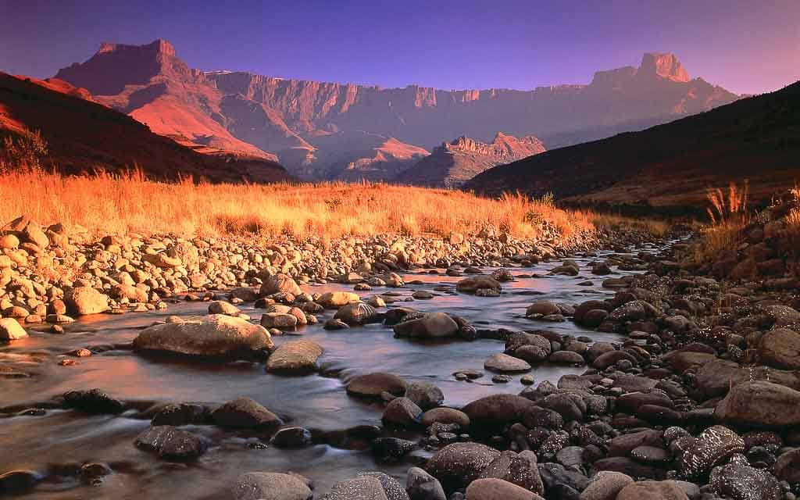
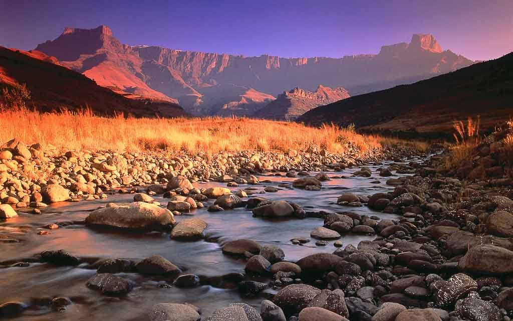
 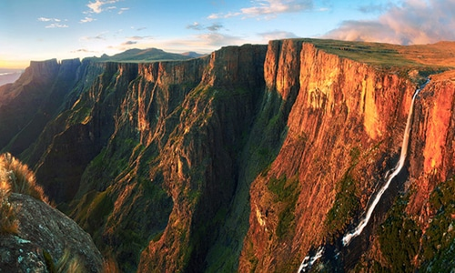
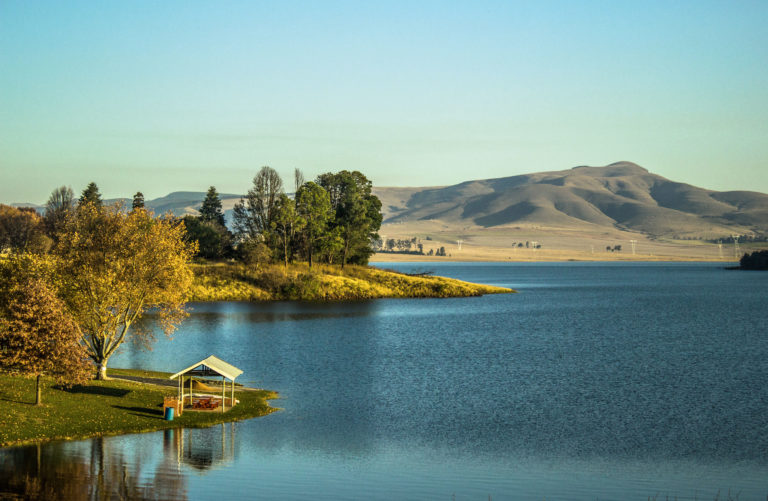
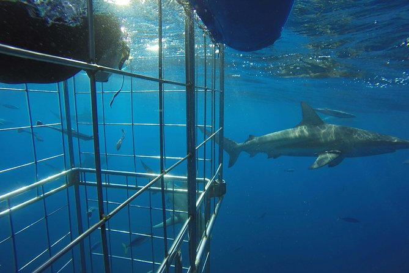
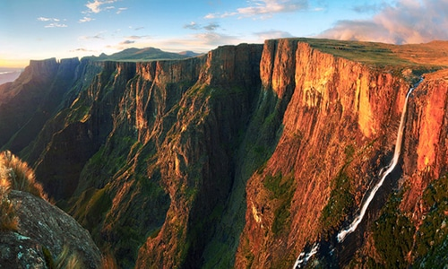
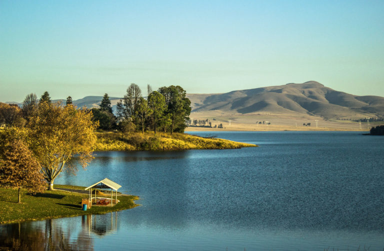
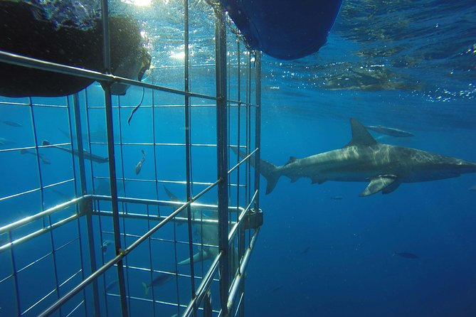
Click here for more info on KwaZulu-Natal